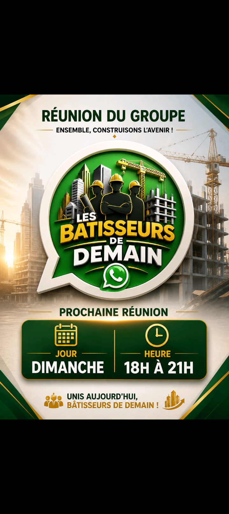
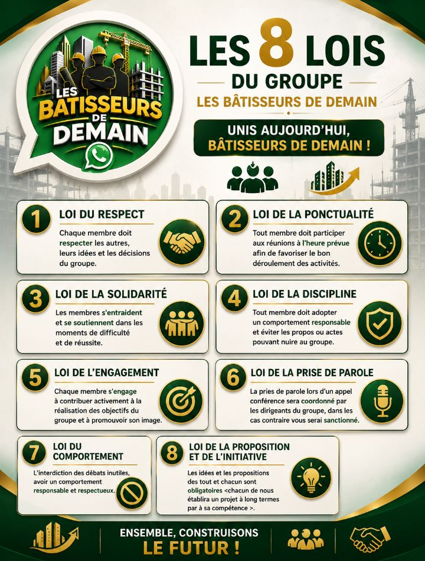

Unis aujourd'hui, bâtisseurs de demain
Groupe le bâtisseurs de demain est un groupe des anciens élèves de la complexe scolaire DIBENESHA KIKWIT, promotion 2022-2023 créer le 12 juin 2026 à 19h00 suite à l'organisation et la motivation de l'ingénieur Arthur kin, ce groupe provient d'un grand groupe de plus ou moins 30 personnes mais après la vote il y avait que 9 personnes intéressées . donc c'est un groupe de 9 membres .
Les Bâtisseurs de Demain est un groupe de jeunes unis pour la réussite, le développement personnel, la solidarité et la construction d'un avenir meilleur.
KINDUTU EXAUCÉ
MUHUNGA DIEU
Jour : Dimanche
Heure : 18h00 à 21h00

